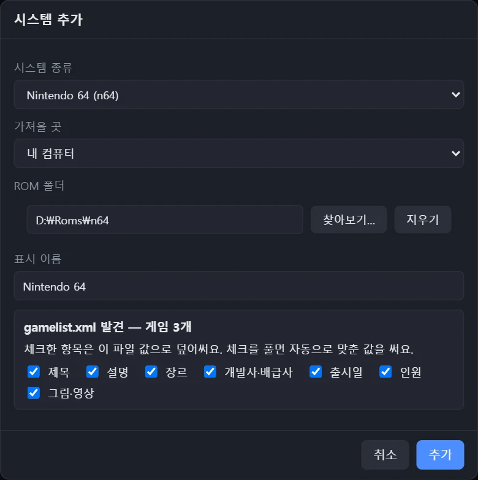
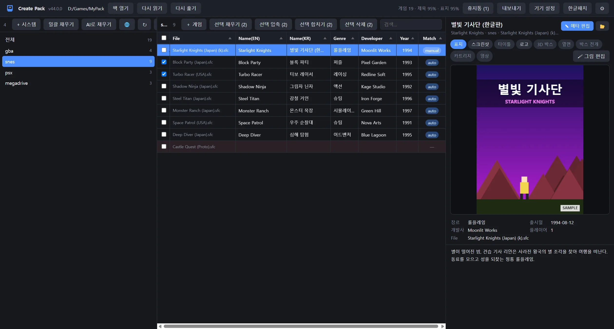
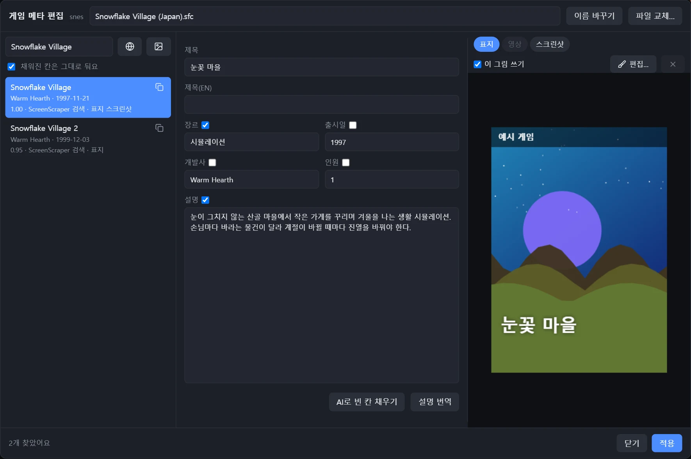
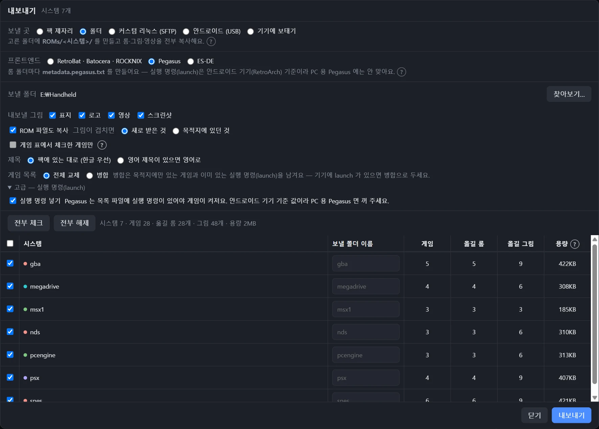
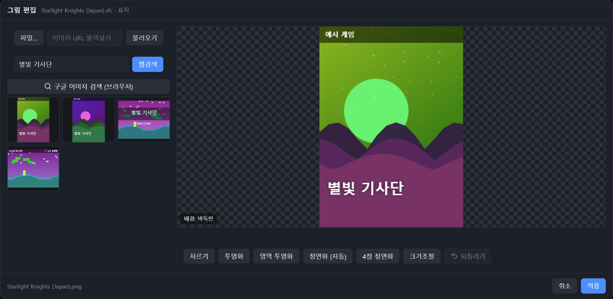
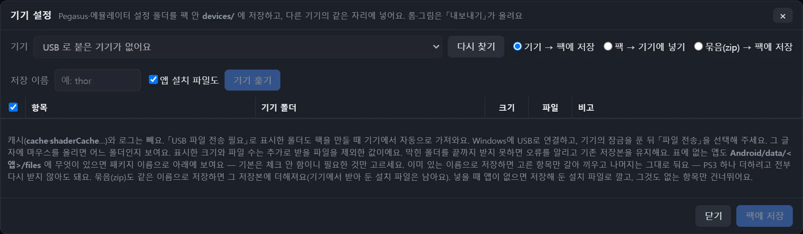
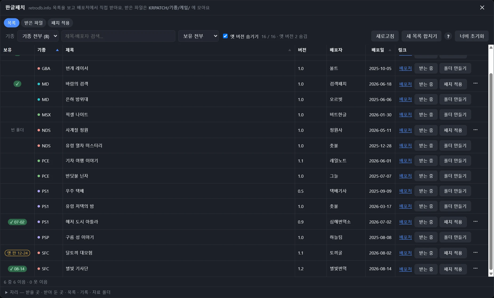

시스템째 담기
롬 폴더를 고르면 시스템 하나로 담고, 메타 DB 로 제목과 그림을 저절로 맞춰요. 팩 밖 폴더는 원본을 그대로 두고 복사해 와요.
RetroBat · Pegasus · ES-DE 용 · Windows
롬 폴더를 담으면 제목·설명·그림을 채워, 프론트엔드가 바로 읽는 모양으로 PC 폴더와 안드로이드 기기에 내보내요.

화면 속 게임과 그림은 설명을 위해 지어낸 예시예요.
gamelist.xmlRetroBat · Batocera · ROCKNIX 가 읽는 목록
metadata.pegasus.txtPegasus 목록 — 안드로이드 실행 명령까지
ES-DE폴더로 보내면 ES-DE 가 읽는 모양으로
팩은 library.json 이 든 폴더 하나예요. 롬은 roms/<시스템>/, 그림은 media/ 에 모여요.

롬 폴더를 고르면 시스템 하나로 담고, 메타 DB 로 제목과 그림을 저절로 맞춰요. 팩 밖 폴더는 원본을 그대로 두고 복사해 와요.

후보를 골라 한 게임씩 고치거나, 시스템 전체를 일괄로 채워요. 메타 DB 에 없으면 ScreenScraper 나 AI(Gemini)에게 물어봐요.

팩 제자리에 목록만 만들거나, 롬·그림까지 폴더 · SFTP · 안드로이드 USB 로 보내요. 체크한 게임만 보낼 수도 있어요.
팩을 오래 다듬을 때 쓰는 도구들이에요.

파일이나 주소로 가져와 자르고, 배경을 투명하게 지우고, 사진 속 박스를 똑바로 펴서 팩에 넣어요.

안드로이드 기기의 Pegasus·에뮬레이터 설정 폴더를 팩에 저장해 두고, 새 기기에 그대로 넣어요.

받은 패치를 게임 폴더로 모으고, 원본 롬에 구워 (k) 판을 만들어요. xdelta·bps·ips, 압축 안의 패치도요.
게임 파일 · BIOS · 열쇠는 들어 있지 않아요.
설명서에 모든 창의 화면을 싣고, 단추마다 번호 네모칸을 붙여 풀어 두었어요.
사용 설명서 보기